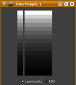

LightZone にはすぐに使えるスタイルがたくさん付属していて、写真の見た目をクリックひとつで劇的に変化させられます。
スタイルとは LightZone のツールを巧く組み合わせたものです。スタイルを選んだあとでさらに個々のツールの設定を変化させることができます。スタイルを自作したり他の人と共有したりすることもできます。
LightZone は写真編集ソフトウェアにおけるブレイク スルーです。デジタル写真をより簡単に編集でき、プロフェッショナルな品質の作品をより短時間で創ることができます。
写真家のためにデザインされていて、ピクセル ペイント ソフトウェアとはいろいろな面で根本的に異なります。ペイント ソフトウェアではピクセルの観点に立ってヒストグラムやトーン カーブといった複雑な数学的概念に沿って考えることを強いられます。それに対して LightZone では、光の物理に基づいたモデルと、写真家たちの数十年に及ぶ撮影現場やカメラ操作や暗室作業での経験から導かれた技法とを採用しています。
LightZone には多くの特徴があり、他の写真編集アプリケーションとはまったく別物になっています。
| スタイル | |
|
|
LightZone にはすぐに使えるスタイルがたくさん付属していて、写真の見た目をクリックひとつで劇的に変化させられます。 スタイルとは LightZone のツールを巧く組み合わせたものです。スタイルを選んだあとでさらに個々のツールの設定を変化させることができます。スタイルを自作したり他の人と共有したりすることもできます。 |
| リライト | |
|
|
リライト ツールでは写真の好きな部分に「再び光を当てる」ことができ、撮影時に違うライティングを使ったかのように見せることができます。 リライト ツールは広い領域のコントラストを下げると同時に部分的なコントラストを上げることでそれを実現します。これは人間の視覚システムを真似したもので、写真をより見栄え良くするとともに作業しやすくします。 |
| ゾーン マッパー | |
|  |
ゾーン マッパー ツールでは写真の明るさとコントラストを調整できます。ハイライトと中間調とシャドウのどんな組み合わせに対しても、他のアプリケーションでよくある「レベル」や「カーブ」ツールよりもずっと直観的に調整できます。 写真を 16 段階のグレー スケールに分けて表示します。各段階は明るさが 50% ずつ異なり、つまり露出が 1/2 段ずつ違っています。ゾーン マッパーはゾーン システムに基づいています。 |
| ゾーン ファインダー | |

|
ゾーン ファインダーでは写真の縮小版を 16 段階のグレー スケールに分けて表示します。各段階は輝度が 50% ずつ異なり、つまり露出が 1/2 段ずつ違っています。ハイライトや中間調やシャドウが写真のどこにあるかを見ることができ、そのうえでゾーン マッパー ツールで調整できます。ゾーン ファインダーについてもっと知る |
| ベクター データに基づいた領域とマスク | |

|
領域を使ってマスクを作ることで、ツールの効果を特定の部分だけに適用することができます。他のアプリケーションと違って、LightZone では領域を (ペイントするのではなく) ドローすることができます。つまり領域はいつでも編集できます。さらに、各領域にはフェザリング領域があって周りの領域と滑らかに混ざり合うので、境目がくっきりするのを避けられます。領域についてもっと知る |
| 線形色空間 | |

|
LightZone は常に 16 ビット線形色空間で処理を行います。ガンマ補正された非線形の色空間とは違って、線形色空間ではシャープ化やぼかしや彩度調節の際にも (ノイズの増加やエッジの歪みや色相のずれなどの) 誤差が加わることがありません。 |
| Raw ファイルへの直接対応 | |

|
Raw ファイルを TIFF や JPEG と同じように簡単に編集することができます。対応しているRaw ファイルは Canon, Epson, Fuji, Kodak, Leaf Valeo, Leica, Minolta, Nikon, Olympus, Panasonic, Pentax, Ricoh, Samsung, Sony のものです。そのため、途中で「Raw 変換」のステップを行う必要がありません。また、DNG ファイルも開くことができます。 |
| ツールでの編集はすべて非破壊的 | |

|
LightZone は編集に使ったツールを「レイヤー」によく似たスタックに積み重ねます。他のアプリケーションのレイヤーとは違って、すべてのツールがスタックのレイヤーになります。(例えば、シャープ ツールを1 枚のレイヤーとして作成します。既存のレイヤーをシャープにするのではありません。) つまり、すべてのツールは非破壊的なのでいつでも変更したり削除したりできます。ツール スタックについてもっと知る |
| シンプル (かつコンパクト) な作業フロー | |
|
LightZone の作業フローは、デジタル カメラやスキャナーからの元画像 (JPEG、TIFF または raw) と、それに関連付けられてツール スタックの情報を持つ「LightZone JPEG」ファイルからなります。綺麗な写真を創るのに必要なものは、これらふたつのファイルだけです。完璧なプリントをLightZone で直接作ることができます。 
追加の手順として、編集した写真を (他のアプリケーションで扱うために) TIFF ファイルに変換することもできます。 |
|